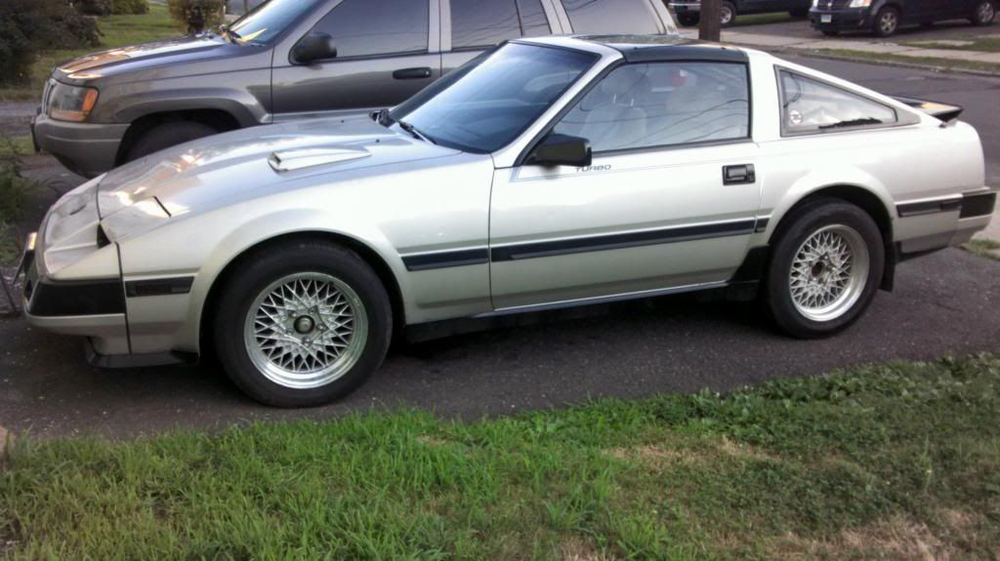

-
The JDS wheels (as a reference name) were made for the German Market .. available originally only there. Hence their desirability even in Japan.Ven;340572 wrote: I thought some of the Germany Z31s were sold with them? Aren't they known as JDS OEM wheels?
Is there a German equivalent of eBay? Or Rinkya? … LOL .. My German is weaker than my Japanese .. I don't have any Z contacts in Germany .. -
I've seen a 50th AE that was imported back to Japan that has some inner-louvers.
2001 Mazda Miata LS
also a 1989 Nissan 240SX
50th AE Build Thread SOLD 2015 -
http://www.ebay.de/inqui-Z-tor;341361 wrote: The JDS wheels (as a reference name) were made for the German Market .. available originally only there. Hence their desirability even in Japan.
Is there a German equivalent of eBay? Or Rinkya? … LOL .. My German is weaker than my Japanese .. I don't have any Z contacts in Germany ..Prius… because Pretentious wouldn't fit across the back of the car…
Cheap, Fast, Reliable - pick any two
My 1986 Turbo Build -
For shaving the front plate bump, how should you fill in the hole? I have never done body work before.. any guides for a nub? -
bond some styrene or resin-safe plastic to the inside of the bumper and then lay some nicely cut pieces of fiberglass edge to edge in the hole. then body filler + glazing putty. shouldn't take more than 3-4 hours from start to paint-ready product (drying time not included).
then you can get a kouki plate holder and try and make use of it for legal reasons if need be.
actually. if you could cleanly cut the hole and then bond the plastic on the inside and cut a thin piece to go on the front where the hole is… if there's some product like a panel bond that you can smear over the edges where they meet that is more resilient and can flex in different weather conditions (maybe panel bond does this well?) then you can skip the fibreglassing and just panel bond it in.
styrene can be found a model car shops in different thicknesses. you should be able to find one that is the same thickness or close to the stock Z bumper thickness. -
Its the complexity of the OEM facia being urethane and filling in the plate area/bonding. Careless addresses it with weather concern, or even if the front facia flexes it will crack or break out.
Proudear makes and FRP replacement with shaved plate.86na - BlueZ
Shiro #366 - Kouki Monster
85t - Mr Tickles -
-
The one I postedinqui-Z-tor;341358 wrote: I'm liking the inner louvers look also. The only application I've seen on a z31 is in a Japanese Z sales brochure. Until then, I didn't know they even made those. None of the USA sales brochures showed them. They remind me of Venetian Blinds .. I recall interior blinds fitted to station wagons and passenger vans in the 60s/70s …
The only thing I'd be wary of is the noise they'd make (rattles) just from the road traveling …
Then again, paper or plastic blinds "today" would cut down on the "noise" … .?
I have seen a imported civic with a set locally. Its something I would want to inspect prior to attempting to build my own. I have zero idea what these are constructed from.
Kimbro Slice;341366 wrote: I've seen a 50th AE that was imported back to Japan that has some inner-louvers.86na - BlueZ
Shiro #366 - Kouki Monster
85t - Mr Tickles -
Have all the parts for the front end conversion but the zenki front end is really growing on me..
My dirty driveway ornament  -
Keep it. CV Mesh wheels fit really nice.86na - BlueZ
Shiro #366 - Kouki Monster
85t - Mr Tickles -
man i really don't know why nissan didn't continue the black stripe the same size from front to back. it would have looked so much better!!!! -
I dig it! That thing looks way better than mine!"Understeer is when you hit the wall with the front of the car. Oversteer is when you hit the wall with the rear of the car. Horsepower is how fast you hit the wall. Torque is how far you take the wall with you…"
-'68 Datsun 1600 Roadster
Build Thread: http://community.ratsun.net/topic/21…-build-thread/
-'85 300zx Turbo
Build Thread: http://z31performance.com/showthread…)build-thread! -
Thanks for the info on the shaved plate thing.... I have a spare AE fascia and an 86T lip that I might play with later.... everything would need to be painted so might as well shave that plate! (You guys that responded might get a PM from me in like 3 months when I am finally unlazy enough to do something about it..). -
HELL YEAH. Finally some pics of another car rocking some CV meshies.
Feelsgoodman.jpeg
2001 Mazda Miata LS
also a 1989 Nissan 240SX
50th AE Build Thread SOLD 2015 -
Derp. There's a picture of it from the rear that really shows you the louvers and I guess I just didn't put two and two together.adamvann3;341432 wrote: The one I posted
2001 Mazda Miata LS
also a 1989 Nissan 240SX
50th AE Build Thread SOLD 2015


Copyright © 2006–. All rights reserved. Privacy Policy